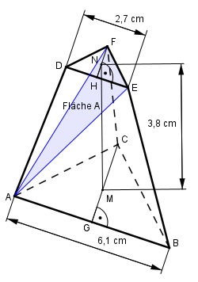
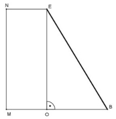
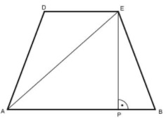
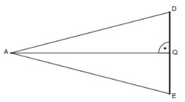

Aufgabe 265 Die Schnittfläche A unterteilt den regelmäßigen dreiseitigen Pyramidenstumpf in 2 Teilkörper. Wie groß sind die Schnittfläche A und das Volumen V des kleineren Teilkörpers?

GB = AB/2 = 6,1 cm/2 = 3,05 cm AB = BC Satz von Pythagoras im Dreieck GBC: BC2 = GB2 + GC2 |-GB2 GC2 = BC2 - GC2 = = 6,12 cm2 - 3,052 cm2 = 27,9 cm2 |√ GC = 5,28 cm = h1 Satz von Pythagoras im Dreieck HEF: HE = DE/2 = 2,7 cm/2 = 1,35 cm DE = EF EF2 = HE2 + HF2 |- HE2 HF2 = EF2 - HE2 = = 2,72 cm2 - 1,352 cm2 = 5,47 cm2 |√ HF = 2,34 cm
Schnitt MBEN: Satz von Pythagoras im Dreieck OBE: NE = NF = 2/3 der Dreieckshöhe HF = = 2/3 * 2,34 cm = 1,56 cm MB = MC = 2/3 der Dreieckshöhe CG = = 2/3 * 5,28 cm = 3,52 cm OB = MB - NE = 3,52 cm - 1,56 cm = 1,96 cm BE2 = OB2 + OE2 = = 3,82 cm2 + 1,962 cm2 = 18,28 cm2 |√ BE = 4,28 cm
Seitenfläche ABED: Satz von Pythagoras im Dreieck PBE: AB - DE 6,1 cm - 2,7 cm PB = ---------- = ------------------- = 1,7 cm 2 2 BE2 = PB2 + PE2 = | - PB2 PE2 = BE2 - PB2 = = 4,282 cm2 - 1,72 cm2 = 15,43 cm2 |√ PE = 3,93 cm = Höhe der Seitenfläche ABED Satz von Pythagoras im Dreieck APE: AP = AB - PB = 6,1 cm - 1,7 cm = 4,4 cm AE2 = AP2 + PE2 = = 4,42 cm2 + 3,932 cm2 = 34,81 cm2 |√ AE = 5,9 cm = Schenkel der Seitenfläche A Seitenfläche A:
Satz von Pythagoras im Dreieck AEQ: EQ = DE/2 = 2,7 cm/2 = 1,35 cm AE2 = AQ2 + EQ2 | - EQ2 AQ2 = AE2 - EQ2 = = 5,92 cm2 - 1,352 cm2 = 33 cn2 |√ AQ = 5,74 cm = Höhe der Fläche A DE * AQ 2,7 cm * 5,74 cm A = --------- = -------------------- = 7,75 cm2 2 2 VStumpf = 3,8 VStumpf = ----- * cm3 3 3,8 VStumpf = ----- + 3 + VStumpf = 33,4 cm3 DE * HF ----------- * MN 2 V = ------------------ = 3 2,7 cm * 2,34 cm --------------------- * 3,8 cm 2 = --------------------------------- = 4 cm3 3